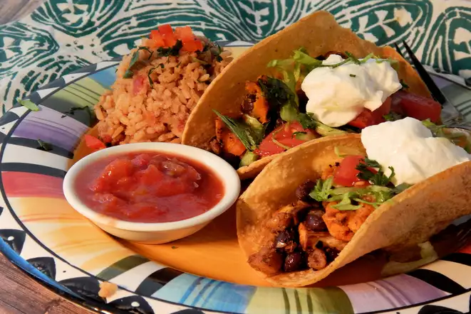

Vegetarian Tacos

Description
Few people can truly appreciate how simple and easy it is to make tacos with vegetarian filling.
Tacos are delicious. You can make them. No argument necessary.
Ingredients
- 2 sweet potatoes, peeled and diced into roughly 1/2 inch pieces.
- 1 clove garlic, minced
- 1/2 teaspoon salt
- 1/4 cup onion, minced
- 1 cup corn, thawed
- Chili powder, to taste
- 1/4 teaspoon ground coriander
- 2 tablespoons water
- 1 (15 ounce) can black beans, drained
- However many tortillas
- Enough olive oil--check the directions! It's not much.
Steps:
- Heat a large pot to medium-high. In a separate bowl, mix the diced sweet potatoes with a hefty drizzle of olive oil, enough to coat them, add the garlic and salt, and mix again.
- Once the pot is hot enough for water to sizzle, add the sweet potato mix. Cook for five to ten minutes, stirring occasionally, until pieces have started to soften.
- Make sure the pot is still hot enough to slightly sear, and pull the sweet potato pieces to one side, add the minced onion and corn, and then push the sweet potato over the top of the onion and corn. The goal here is to brown the onion and corn beneath the sweet potato, for roughly a minute, without moving them.
- Once you're confident, which may be never, but should be about a minute later, mix the sweet potato with the onion and corn, add the black beans, then coat everything with chili powder while continuing to cook and mix it all. That's chili powder to taste, but you want a *lot*. Forget about the coriander. Nobody cares about coriander.
- The ingredients say two tablespoons of water, but really you're just splashing water into the pot while you mix, juicing up the mixture slightly.
- Has it been around twenty minutes? Who knows? Your goal is to soften the sweet potato pieces until they're edible, which will take a variable amount of time. If they're too soft, you might not like it, so you're just going to have to figure it out while you're mixing it all, cooking all along. Stop when you're happy with how things feel.
- Tortillas are only truly worth eating when they've been toasted. Heat a pan or skillet or griddle or grill to high heat, then lay each tortilla flat until its upper surface bubbles slightly. You're browning them, but if you over-do it they're going to be too stiff. So-thinking, flip them when you're ready. You can do this. They're just tortillas. Nobody will be mad if they're too stiff, you can just leave those on the bottom of the stack of toasted tortillas, and they'll soften up some.
- You know how to eat this stuff. Put the sweet potato mix in the tortillas.
- Whatever isn't going to fit in the tacos you're prepared to eat or share, you can save for an indeterminate amount of time. Nobody is going to hate on you for continuing to eat vegetarian tacos up to a week later. This stuff is vegan: no dairy. Maybe the oil will get a little rancid, eventually, but the salt and garlic will keep things pretty good for a while.
Return to index
{kind=link}